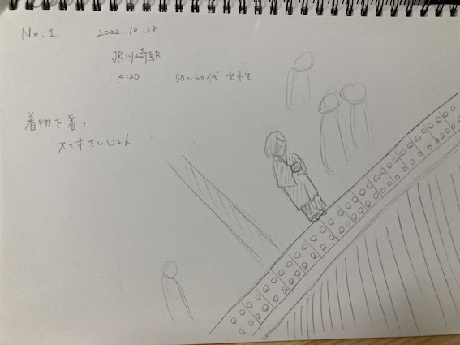
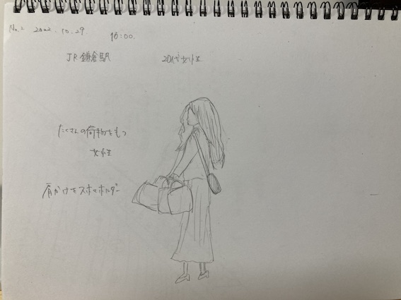
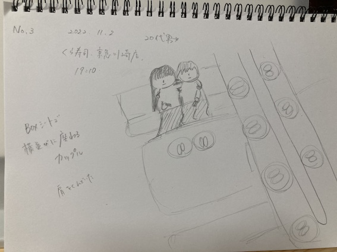
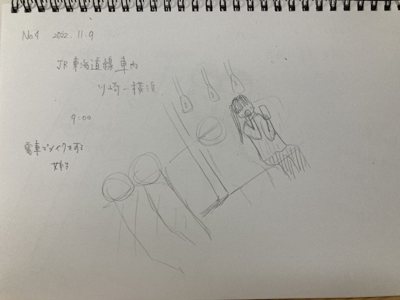

観察記録
着物を着てスマホをいじる女性

2022.10.28/JR川崎駅/14:20/50-60代/女性
着物を着ながらスマホを見ている女性を見て、現代だなと感じた。
小さいカバンできた結果、手に大荷物を持っている女性

2022.10.29/JR鎌倉駅/10:00/20代/女性
小さめのショルダーバッグしか持っていないのに、たくさん買い物をして、
手にいっぱい手提げバックを持っている女性を見て、大きめのカバンを持ってきていたら
手荷物が減らせたのになっと思った。
BOXシートで横並びになって肩を組みながら食事をする男女

2022.11.2/くら寿司京急川崎駅前店/19:10/男女
BOXシートで横並びに座っている男女を見て、なんでわざわざ横並びに座るんだろうと思った。
また、食事中なのだから肩を組みながら食べてるのを見て、食べづらくないのか疑問に思った。
電車でメイクをする女性

なんでわざわざ電車でメイクをするのか疑問に思った。
朝家で時間がなかったのなら、会社のトイレや化粧室で5分くらいパパッと
メイクすればいいのにと思った。